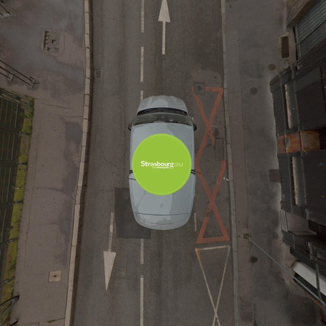
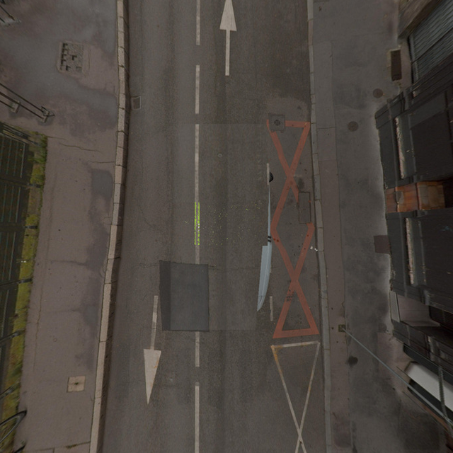
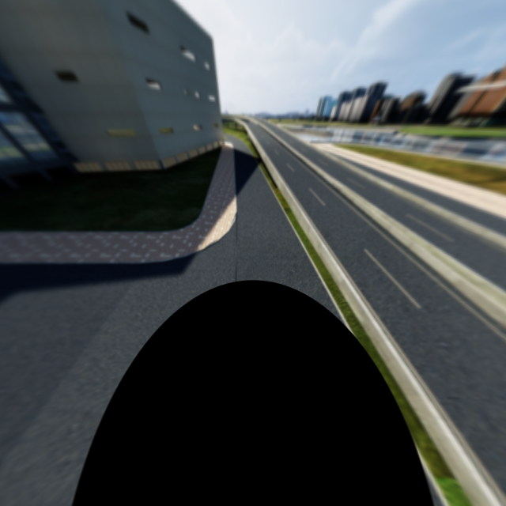
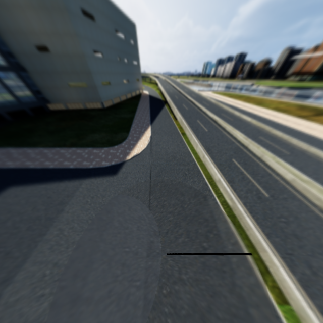
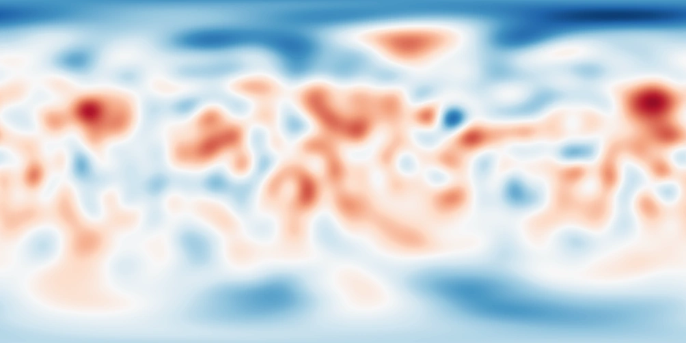

Snap Inc.
ML Research Engineer InternApplied research on L1 recommendation foundation models for 500M+ Snapchat feeds.
Hello! I study computer science & math at Brown University.
I’m interested in reinforcement learning, world models, and efficient inference: how agents learn to act, and how to make them run well.
In industry and personal work, I've also deeply explored robotics, recommender systems, LLM post-training, and large-scale inference infrastructure. I love meeting new people, so feel free to say hello through email or LinkedIn below!
A Minecraft speedrunning agent.
Screenshots in, keyboard and mouse actions out.
Optimizing MiniOneRec inference with shared KV caches, batched constraints, and native GQA.
869→188ms median
Compute the history once, reuse it across beams.
174→160ms median
Two KV heads, without expanding them to twelve.
Separate paired experiments, FP32 on an RTX A6000. Compilation and warmup excluded. Each trace shows an 80-request window in recorded order, looping at the end; these are recorded measurements. All 25,000 ranked positions match in each comparison; shared prefill and compilation retain small floating-point score differences. Protocol & source data
Autonomous VRC routines in ROS 2 and Gazebo. The field, controller estimate, and command trace on one timeline.
6121C · Spin Up
Panoramic Alignment and View-based Evidence Recovery
Recovering occluded street-view pixels from neighboring panoramas, using feature matching and geometry.




A · find the visible road pixels
Reconstructing Mercury’s southern gravity field with lunar transfer learning and topography.
Input · degree 25

Southern detail is a model prediction.
A wildfire-response environment for multi-agent learning: fire spread, aircraft dispatch, suppression, and logistics.
Four stems, twelve pads, a step sequencer.
A music instrument for macOS.